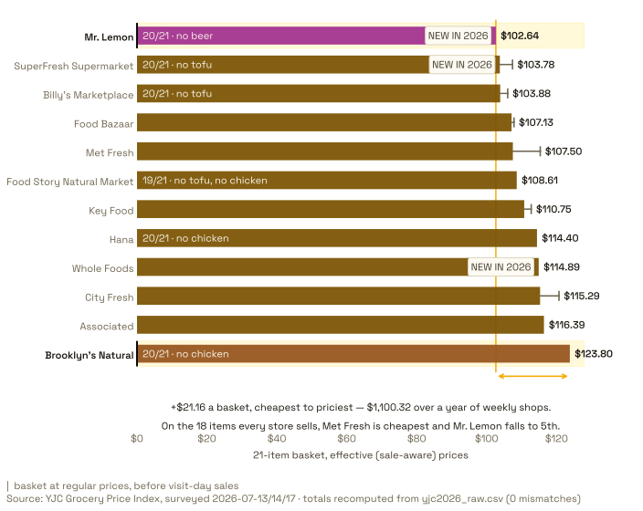
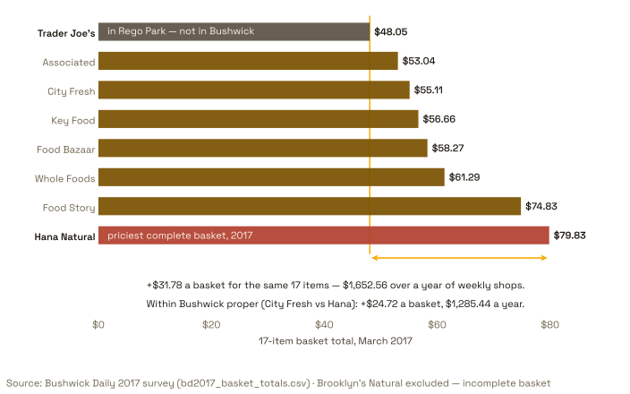
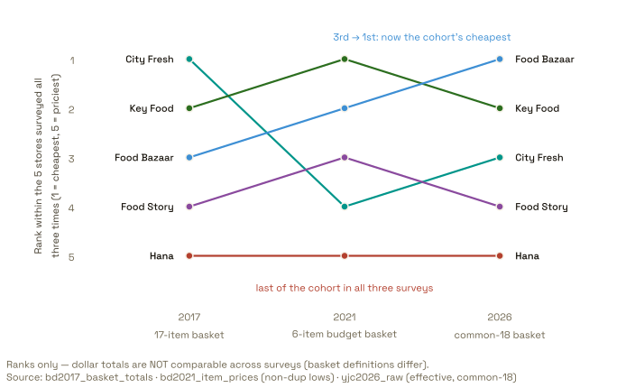
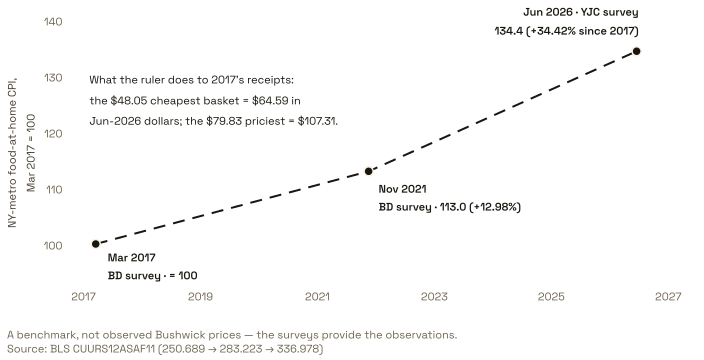

Chapter 1 · 2026
The league table — and the trap inside it
Mr. Lemon posts the cheapest full basket, $102.64; Brooklyn’s Natural the priciest, $123.80. But the full-basket ranking hides an availability trap: seven store-item combinations weren’t carried at all, and missing items make a basket look cheaper. On the 18 items every store actually sells, Met Fresh wins at $83.29, Mr. Lemon drops to 5th, and the true spread widens to 1.29x.
What the identical 21-item basket cost, July 13, 2026 New in 2026: Whole Foods · SuperFresh · Mr. Lemon
Effective prices (sale price when lower). Highlighted: cheapest and priciest carts.

View the data
| Store | Full basket (21) | Items priced | Common-18 basket | Flags |
|---|---|---|---|---|
| Mr. Lemon | $102.64 | 20 (no beer) | $87.65 (5th) | NEW IN 2026 · 3 unit Mismatches in produce |
| SuperFresh | $103.78 | 20 (no tofu) | $86.80 (4th) | NEW IN 2026 |
| Billy’s Marketplace | $103.88 | 20 (no tofu) | $86.40 (3rd) | — |
| Food Bazaar | $107.13 | 21 | $83.66 (2nd) | — |
| Met Fresh | $107.50 | 21 | $83.29 (1st) | — |
| Food Story Natural Market | $108.61 | 19 (no tofu, no chicken) | $95.62 (10th) | — |
| Key Food | $110.75 | 21 | $87.78 (6th) | — |
| Hana | $114.40 | 20 (no chicken) | $96.42 (11th) | — |
| Whole Foods | $114.89 | 21 | $93.92 (9th) | NEW IN 2026 · 81% of rows flagged |
| City Fresh | $115.29 | 21 | $93.12 (8th) | — |
| Associated | $116.39 | 21 | $92.42 (7th) | — |
| Brooklyn’s Natural | $123.80 | 20 (no chicken) | $107.82 (12th) | — |
Common-18 = the 18 items every store fully priced (tofu, chicken breast, and beer removed; no imputation). Full derivation in analysis/04-analyst-2026-and-synthesis.md (A1).
Read the fine print (4)
- Totals use effective prices — the sale price when lower. 18 sale rows were recorded across the tracker (5 with zero savings or excluded); 13 real discounts totaling $21.68. Met Fresh alone had $7.83 of sales, worth four rank places.
- 7 unavailable store-item rows clip both tails of the full-basket ranking; pair the printed 1.21x spread with the fairer common-18 1.29x.
- Mr. Lemon’s produce carries 3 unit-mismatch comparability flags; Whole Foods’ basket is 81% substitutions (organic/store-brand) — cheapest-at-store, not like-for-like.
- Single visit per store, collected 2026-07-13/14/17 by YJC student journalists. 67 of 252 rows lack recorded dates (Brooklyn’s Natural, Food Story, Whole Foods).
Reproduce: python3 analysis/scratch2_compute.py
One more 2026 surprise: Whole Foods arrived in Bushwick mid-pack — 9th of 12 — while winning more cheapest-item honors than any other store (butter, cheddar, yogurt, Cheerios, tied bananas) and the cheapest dairy group outright. The “Whole Paycheck” era did not survive contact with the 2026 shelf. Its one indulgence: the survey’s single priciest observation, $16.99 illy coffee.
Chapter 2 · 2017
The $1,652 question
In March 2017, Bushwick Daily priced a 17-item basket at nine stores. The identical cart cost $48.05 at Trader Joe’s and $79.83 at Hana Natural — a 66% gap worth $1,652.56 a year of weekly shopping.
2017: the same 17 items, eight complete baskets
Brooklyn’s Natural excluded — its $46.88 total was an artifact of unpriced and missing items.

View the data
| Store | 17-item basket | Note |
|---|---|---|
| Trader Joe’s (Rego Park) | $48.05 | out-of-area benchmark |
| Associated | $53.04 | |
| City Fresh | $55.11 | |
| Key Food | $56.66 | |
| Food Bazaar | $58.27 | |
| Whole Foods (Williamsburg) | $61.29 | |
| Food Story | $74.83 | |
| Hana Natural | $79.83 | |
| Brooklyn’s Natural | $46.88 | EXCLUDED — incomplete basket; adjusted est. $62.07 ex-2 items |
Read the fine print (3)
- Single visit per store over four weeks, different staffers, some items on sale at visit time.
- Trader Joe’s is in Rego Park — a drive or bike ride, not a neighborhood walk.
- Whole Foods (Williamsburg, $61.29) was only 27.6% above Trader Joe’s — and $13.54 cheaper than Food Story.
Chapter 3 · 2017 → 2021 → 2026
Expensive stays expensive — once you fix the basket
Across three different baskets in nine years, store order is the durable fact: rank correlation with 2026 is +0.68 (from 2017) and +0.71 (from 2021) on the fair common-18 basket. Compare naively against the raw full basket instead and the sign flips to −0.54 — missing items flatter the premium stores. Method is the message.
Rank, not dollars: the five recurring stores across three surveys
Basket definitions differ per survey, so the axis is rank within the recurring five. Key Food 2-1-2 · Food Bazaar 3-2-1 · City Fresh 1-4-3 · Food Story 4-3-4 · Hana 5-5-5.

View the data
| Store | 2017 rank | 2021 rank | 2026 rank (common-18) |
|---|---|---|---|
| Key Food | 2 | 1 | 2 |
| Food Bazaar | 3 | 2 | 1 |
| City Fresh | 1 | 4 | 3 |
| Food Story | 4 | 3 | 4 |
| Hana | 5 | 5 | 5 |
Rank within the five-store recurring cohort, 1 = cheapest. Basket definitions differ per survey — ranks only.
Read the fine print (3)
- Three basket definitions (17-item totals; 6-item budget basket; common-18) — rank only, never a cross-year dollar slope.
- City Fresh’s 2021 point carries a $18.34–$21.34 sensitivity band from two article-vs-Tableau conflicts; its direction is robust.
- Mr. Fruit (2021) → Mr. Lemon (2026) is an approximate entity mapping and is excluded from this cohort.
Hana is the exception that proves the method. Last place three surveys running — yet its premium over the median store collapsed from +39% (2017) to +83% (2021) to +7% (2026), and it now sells the survey’s cheapest milk. The tail persisted; the tax on it evaporated. City Fresh ran the opposite arc: readers’ favorite, 3rd cheapest in 2017, 2nd priciest in 2021, bottom-third in 2026 — the 2021 anomaly was repositioning, not bad data.
Chapter 4 · Bushwick vs. America
The premium tripled
In Nov 2021, Bushwick’s cheapest staples ran 6–13% above the national average price. In 2026, even the cheapest shelf price in the neighborhood is 30–44% above the national average — and the median is 67–166% above. Eggs tell it fastest: the 2021 nine-store band of $1.39–$2.69 a dozen is extinct; the 2026 median is $5.69.
Eggs: the $2 dozen is extinct
Every 2021 cheapest dozen vs every recorded 2026 dozen, with BLS national averages per year. Shapes mark conventional vs specialty SKUs — spec inflation is half the story.
![Two-row dot strip chart of egg prices per dozen. Top row, July 2026: twelve recorded prices from Billy's $1.67 sale price (regular $2.79, shown with a sale whisker) to Whole Foods' $8.49 organic dozen, median $5.69 — 165.8% above the BLS U.S. average of $2.141; olive circles mark conventional dozens, plum diamonds mark cage-free, organic, or farm-fresh SKUs, which dominate the upper range. Bottom row, November 2021: nine of ten stores' cheapest dozens cluster between $1.39 and $2.69 around the $1.718 BLS average, with Hana's $4.29 the lone outlier. Met Fresh's 2026 18-pack is adjusted to per-dozen and flagged MISMATCH. Full data in the table below.](figures/fig-egg-band-narrow.svg)
View the data
| Store | 2026 price/dozen | Spec / flags | 2021 cheapest dozen |
|---|---|---|---|
| Billy’s Marketplace | $2.79 reg ($1.67 sale, 3-for-$5) | Sunshine Farms · ON SALE | $1.39 |
| Food Bazaar | $3.99 | jumbo cage free · DIFFERENT | $1.59 |
| Hana | $4.99 | “farm fresh” · DIFFERENT | $4.29 |
| SuperFresh | $5.49 | Sunshine Farms · NEW IN 2026 | — |
| Associated | $5.69 | Sunshine Farms | $2.00 |
| City Fresh | $5.69 | cage free | $1.89 |
| Met Fresh | $5.99 (18-pack; ×12/18 = $3.99/doz) | MISMATCH | $1.69 |
| Food Story | $5.99 | cage free · DIFFERENT | $2.69 |
| Mr. Lemon | $6.00 | organic free range · UNCLEAR | — |
| Brooklyn’s Natural | $6.29 | free range · DIFFERENT | — |
| Key Food | $7.99 | cage free brown · DIFFERENT | $1.67 |
| Whole Foods | $8.49 | Organic Valley free range · DIFFERENT | — |
| Shop Fair (2021 only) | — | $2.00 | |
| Mr. Fruit (2021 only) | — | $1.99 |
BLS national averages: $1.718 (Nov 2021) · $2.141 (Jun 2026).
Read the fine print (3)
- Normalization: 2021 = cheapest-available dozen per store; 2026 = the one product each store recorded — constructions differ, so rows are compared to their own year’s BLS line, never to each other item-for-item.
- Met Fresh’s 2026 18-pack is adjusted ×12/18 to per-dozen and flagged MISMATCH; Billy’s $1.67 is a 3-for-$5 sale (whisker to its $2.79 regular price).
- 7 of the 9 prices ≥$4.99 are specialty SKUs (cage-free/free-range/organic/farm-fresh — mostly DIFFERENT or UNCLEAR flags) — the band shift mixes real inflation with spec drift.
Bushwick’s floor vs. America’s average
Store-level cheapest prices against BLS national average lines, Nov 2021 and Jun 2026.
![Three small-multiple dot plots of November 2021 Bushwick store lows against dashed BLS national-average lines. Eggs: 6 of 10 stores' cheapest dozen sits above the $1.718 average, with Hana's $4.29 highest. Milk: all three observed gallons ($4.19, $4.49, $4.59 — unit-mismatch rows) sit 14–25% above the $3.671 average. Chicken breast: six per-pound prices from Key Food's $1.05 (a hollow marker — 70.98% below BLS, consistent with a visit-day sale) to Food Story's $15.99 only option, median $3.83, 5.9% above the $3.618 average. Full data in the table below.](figures/fig-floors-2021-narrow.svg)
View the data
| Item | Store | 2021 cheapest price | Flag |
|---|---|---|---|
| Eggs /doz | Billy’s | $1.39 | |
| Eggs /doz | Food Bazaar | $1.59 | |
| Eggs /doz | Key Food | $1.67 | |
| Eggs /doz | Met Fresh | $1.69 | |
| Eggs /doz | City Fresh | $1.89 | |
| Eggs /doz | Mr. Fruit | $1.99 | |
| Eggs /doz | Shop Fair | $2.00 | |
| Eggs /doz | Associated | $2.00 | |
| Eggs /doz | Food Story | $2.69 | |
| Eggs /doz | Hana | $4.29 | |
| Milk /gal | Associated | $4.19 | UNIT MISMATCH |
| Milk /gal | City Fresh | $4.49 | UNIT MISMATCH |
| Milk /gal | Met Fresh | $4.59 | UNIT MISMATCH |
| Chicken breast /lb | Key Food | $1.05 | SALE-SUSPECT |
| Chicken breast /lb | Billy’s | $2.69 | |
| Chicken breast /lb | Met Fresh | $3.54 | |
| Chicken breast /lb | City Fresh | $4.12 | |
| Chicken breast /lb | Food Bazaar | $6.00 | |
| Chicken breast /lb | Food Story | $15.99 | only option |
BLS national averages Nov 2021: eggs $1.718/doz · milk $3.671/gal · chicken breast $3.618/lb.
Read the fine print (3)
- 2021 recorded cheapest-available floors (conservative vs. an average); 2026 recorded one product per store, so 2026 medians overstate a cheapest-available premium — floors are the honest bound.
- BLS values are national averages over standardized specifications, not NYC-metro item averages; they never share a nominal axis with survey floors without full labeling.
- Milk is excluded from the 2026 comparison (organic vs. conventional — not comparable).
The premium, repeated at Jun-2026 BLS values
The same floor-vs-average construction as above, re-run on the 2026 shelf: floors +30–44%, medians +67–166%.
![Range-bar chart of Bushwick price premiums over BLS national averages in June 2026, zero line at the BLS average. Eggs: floor $2.79 (+30.3%) to median $5.69 (+165.8%) vs a 2021 premium of +12.9%. Chicken breast: floor $5.99 (+43.3%) to median $6.99 (+67.2%) vs +5.9% in 2021. Coffee per-pound equivalent: floor $13.58 (+43.6%) to median $19.42 (+105.4%); the 2021 figure was not computable. Floors are the conservative bound because 2026 recorded one product per store; milk is excluded as organic-only. Full data in the table below.](figures/fig-premium-2026-narrow.svg)
View the data
| Item | BLS avg Jun 2026 | 2026 floor | 2026 median | 2021 premium |
|---|---|---|---|---|
| Eggs /doz | $2.141 | $2.79 (+30.3%) | $5.69 (+165.8%) | +12.9% |
| Chicken breast /lb | $4.181 | $5.99 (+43.3%) | $6.99 (+67.2%) | +5.9% |
| Coffee /lb equiv | $9.457 | $13.58 (+43.6%) | $19.42 (+105.4%) | not computable |
Floors = cheapest observed shelf price; 2026 medians overstate a cheapest-available premium (one product per store). Milk excluded (organic-only observations).
Read the fine print (2)
- Normalization: 2026 recorded one product per store, so the floor (cheapest observed shelf price) is the honest conservative bound; medians overstate a cheapest-available premium — the reverse of 2021’s construction, and the reason both ends of the range are drawn.
- Milk is excluded (2026 observations are organic-only — not comparable to the BLS conventional-gallon average); chicken cuts differ (thin-sliced premium at some stores).
And the single most quotable number in the record: the same brick of Café Bustelo went from $3.99 (2021) to a $12.14 median (2026), +204%, while national ground coffee rose +96%. The full Bustelo index — with every store’s 2026 price — is on the dashboard.
The Bustelo index
One brand, one brick, ten stores: the cleanest like-for-like trend in the record.
![Dot strip chart: ten 2026 regular shelf prices for a 10-oz Cafe Bustelo brick, from Food Bazaar $8.49 to Associated $13.49, median $12.14 — 3.04 times the $3.99 the same brick cost in 2021 (+204.3%). Met Fresh and City Fresh were on sale on visit day: their solid dots sit at the sale prices ($6.99 and $8.99) with whiskers to hollow dots at their regular prices ($12.29 and $12.89); the median uses regular prices. A shaded band shows the BLS U.S. average in 10-oz equivalents rising from $3.01 (Nov 2021) to $5.91 (Jun 2026), +96.4% — every 2026 Bushwick price sits far right of it. Full data in the table below.](figures/fig-coffee-shock-narrow.svg)
View the data
| Store | Bustelo 10 oz regular | Sale | Flag |
|---|---|---|---|
| Food Bazaar | $8.49 | ||
| Key Food | $8.99 | ||
| SuperFresh | $9.99 | ||
| Food Story | $10.99 | UNCLEAR pack size | |
| Billy’s | $11.99 | ||
| Met Fresh | $12.29 | $6.99 | ON SALE |
| City Fresh | $12.89 | $8.99 | ON SALE |
| Hana | $12.99 | ||
| Mr. Lemon | $13.00 | ||
| Associated | $13.49 | ||
| Brooklyn’s Natural | $13.49 (own brand — not Bustelo) | DIFFERENT | |
| Whole Foods | $16.99 (illy — not Bustelo) | DIFFERENT |
Regular-price median of the ten Bustelo stores: $12.14 (vs $3.99 in 2021, +204.3%). BLS ground coffee: $4.816 (Nov 2021) → $9.457/lb (Jun 2026).
Read the fine print (3)
- Normalization: single-brand (Cafe Bustelo 10 oz) regular shelf prices — never compared to 2021’s any-brand cheapest floors ($1.67), which measure a different thing.
- The 2021 $3.99 pack size is assumed-standard 10 oz (unverified in the source article); Food Story’s 2026 size is flagged UNCLEAR.
- Hollow dots are visit-day sale prices (Met Fresh $6.99, City Fresh $8.99); the median uses regular prices.
Chapter 5 · The verdict
Did Bushwick outpace inflation?
The NY-metro food-at-home CPI rose +34.42% between the 2017 and 2026 surveys — that’s the break-even line. On the 15 overlap items, four stores beat it, and the two premium stores fell ~14% short of it. Inflation was regressive: the cheap stores inflated hardest, and the market converged from both ends.
The inflation ruler: NY-metro food-at-home CPI, indexed to the 2017 survey
250.689 (Mar 2017) → 283.223 (Nov 2021) → 336.978 (Jun 2026). All three survey dates now filled.

View the data
| Date | CPI (1982-84=100) | Indexed to 2017 survey |
|---|---|---|
| Mar 2017 (survey 1) | 250.689 | 100.0 |
| Nov 2021 (survey 2) | 283.223 | 113.0 |
| Jun 2026 (survey 3) | 336.978 | 134.4 |
2017 baskets restated in Jun-2026 dollars: TJ $48.05→$64.59 · Associated $53.04→$71.30 · City Fresh $55.11→$74.08 · Key Food $56.66→$76.16 · Food Bazaar $58.27→$78.33 · Whole Foods $61.29→$82.39 · Food Story $74.83→$100.59 · Hana $79.83→$107.31.
Read the fine print (2)
- The CPI ruler is a benchmark, not observed Bushwick prices — the surveys provide the observations; restated totals are the break-even line, not measured 2026 baskets.
- Factors: 2017→2021 ×1.1298, 2021→2026 ×1.1898, 2017→2026 ×1.3442 (CUURS12ASAF11).
The break-even chart
Lower-bound store inflation ratios against the 1.3442 CPI line — the visual form of the verdict grid below.

View the data
| Store | Lower-bound ratio | Verdict |
|---|---|---|
| Associated | 1.522x | outpaced inflation |
| Whole Foods | 1.437x | outpaced inflation |
| City Fresh | 1.431x | outpaced inflation |
| Key Food | 1.384x | outpaced (3% margin) |
| Food Bazaar | 1.294x | indeterminate |
| Hana | 1.018x* | ≥14% below break-even |
| Food Story | 0.951x* | ≥14% below break-even |
* subset missing 1–2 items. Break-even line: 1.3442 (NY-metro food-at-home CPI, Mar 2017 → Jun 2026).
Read the fine print (2)
- Normalization: each ratio divides a store’s 2026 price for the 15 items overlapping the 2017 basket by its FULL 17-item 2017 total — a deliberate lower bound, so “outpaced inflation” claims are conservative.
- Hana and Food Story bars are hatched: their 2026 overlap subsets miss 1–2 items; they stay ≥14% below break-even under maximally generous imputation.
Store-by-store verdict vs. the +34.4% break-even
Lower-bound ratios: 15 overlap items (2026) over the full 17-item 2017 total — conservative by construction.
Read the fine print (3)
- * Hana and Food Story subsets miss 1–2 items; they remain ≥14% below break-even even after maximally generous imputation.
- Ratios are lower bounds: 15 overlap items priced in 2026 over the FULL 17-item 2017 totals.
- Spec drift exists inside the overlap (yogurt deflates; Kerrygold butter inflates the 2026 side).
Explore the record
→ The dashboard. KPI tiles, the 2021 budget-basket league with its sensitivity band, 2026 food-group composition, the sales tracker, stars-vs-receipts, and the coffee cliff. Open → The shelf explorer. A custom D3 walk through chicken’s 15x spread, the brand tax, and all 21 items × 12 stores of the 2026 shelf — sale whiskers, comparability chips and all. OpenThe 2026 index was reported by YJC student journalists in the Journalism for All Summer Newsroom Internship, coordinated at Bushwick Daily by Cameron Leo — the first crew to price the neighborhood since 2021. Read how it happened →
Data & methods
Every number on these pages traces to a CSV row or a BLS series. Sources: the 2017 survey, the 2021 survey and its companion Tableau viz, the 2026 YJC index workbook, and BLS public series. Known defects are flagged in the data, printed on the charts, and never silently corrected — including a duplicated block in the 2021 source, three gallon-vs-half-gallon unit mismatches, and the 2026 availability holes.
- compiled_grocery_prices.csv — all 435 observations, 2017–2026, quality-flagged
- yjc2026_raw.csv — the 2026 index, 252 rows as collected
- bd2017_basket_totals.csv · bd2021_item_prices.csv · tableau_grocerygraph.csv · bls_benchmarks.csv